Initialize with genomic data
circlize is quite flexible to initialize the circular plot not only by chromosomes, but also by any type of general genomic categories.
Initialize with cytoband data
Basic usage
ccPlot(initMode='initializeWithIdeogram')
text(0, 0, "default", cex = 1)
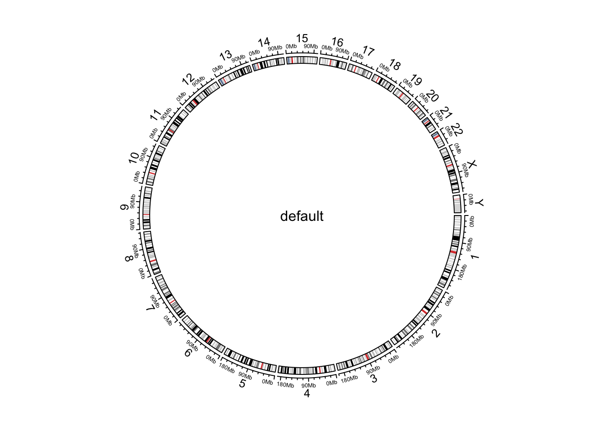
Initialize genomic plot, default.
cytoband.file = system.file(package = "circlize", "extdata", "cytoBand.txt")
cc = ccPlot(initMode='initializeWithIdeogram', cytoband = cytoband.file)
cc
cytoband.df = read.table(cytoband.file, colClasses = c("character", "numeric",
"numeric", "character", "character"), sep = "\t")
cc = ccPlot(initMode='initializeWithIdeogram', cytoband = cytoband.df)
cc
cc = ccPlot(initMode='initializeWithIdeogram', chromosome.index = paste0("chr", c(3,5,2,8)))
cc
text(0, 0, "subset of chromosomes", cex = 1)
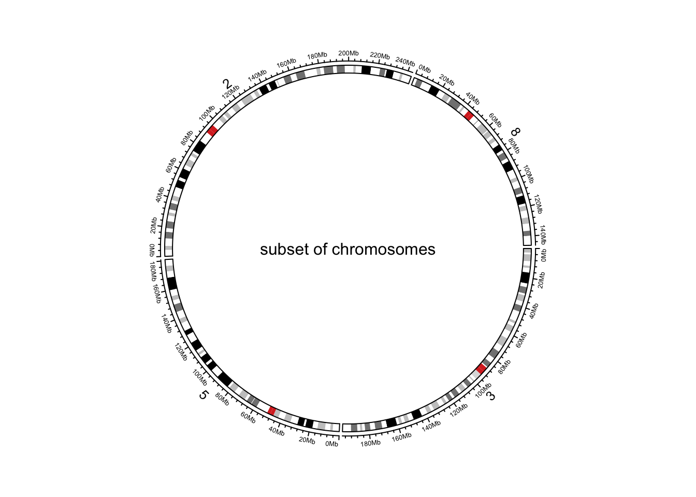
Initialize genomic plot, subset chromosomes.
circos.clear()
Pre-defined tracks
cc = ccPlot(initMode='initializeWithIdeogram', plotType = c("axis", "labels"))
cc
text(0, 0, "plotType = c('axis', 'labels')", cex = 1)
circos.clear()
cc = ccPlot(initMode='initializeWithIdeogram', plotType = NULL)
cc
text(0, 0, "plotType = NULL", cex = 1)
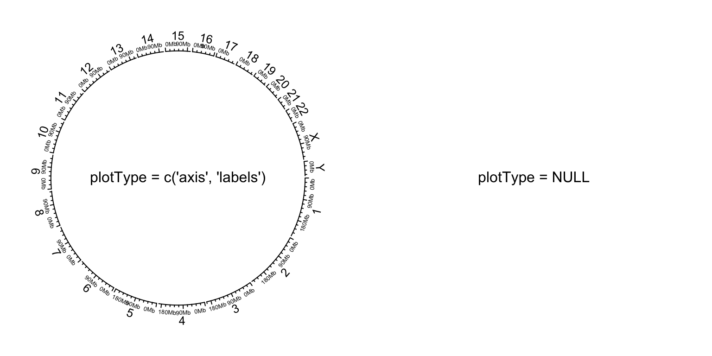
Initialize genomic plot, control tracks.
circos.clear()
Other general settings
par1 = ccPar("start.degree" = 90)
cc = ccPlot(initMode='initializeWithIdeogram')
cc + par1
circos.clear()
text(0, 0, "'start.degree' = 90", cex = 1)
par1 = ccPar("gap.degree" = rep(c(2, 4), 12))
cc = ccPlot(initMode='initializeWithIdeogram')
cc + par1
circos.clear()
text(0, 0, "'gap.degree' = rep(c(2, 4), 12)", cex = 1)
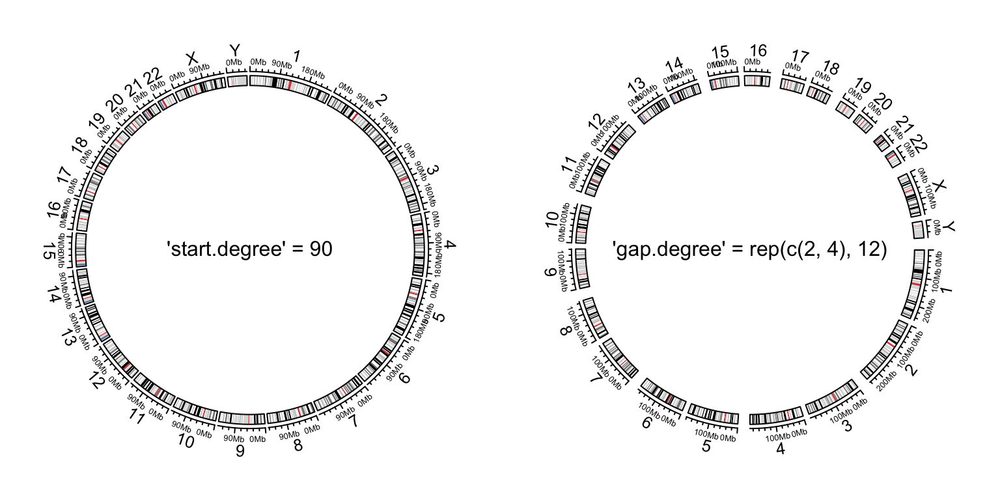
Initialize genomic plot, control layout.
Customize chromosome track
set.seed(123)
cc = ccPlot(initMode='initializeWithIdeogram', plotType = NULL)
t1 = ccTrack(ylim = c(0, 1), panel.fun = function(x, y) {
chr = CELL_META$sector.index
xlim = CELL_META$xlim
ylim = CELL_META$ylim
circos.rect(xlim[1], 0, xlim[2], 1, col = rand_color(1))
circos.text(mean(xlim), mean(ylim), chr, cex = 0.7, col = "white",
facing = "inside", niceFacing = TRUE)
}, track.height = 0.15, bg.border = NA)
cc + t1
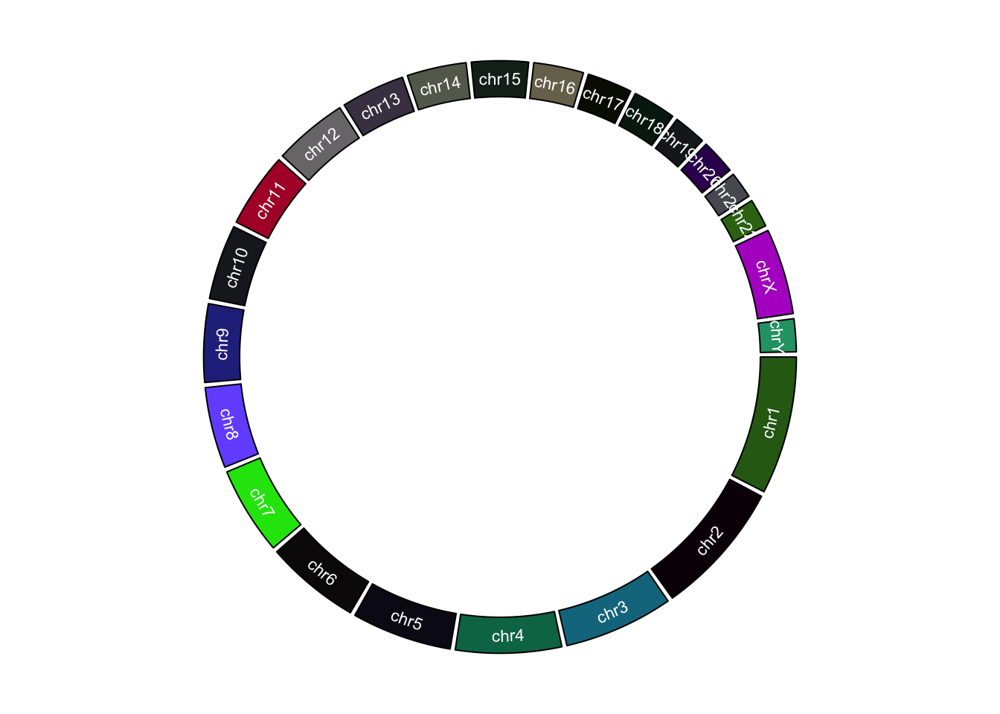
Customize chromosome track.
circos.clear()
Initialize with general genomic category
tp_family = readRDS(system.file(package = "circlize", "extdata", "tp_family_df.rds"))
head(tp_family)
cc = ccPlot(initMode = 'initializeWithIdeogram', cytoband = tp_family)
t1 = ccTrack(ylim = c(0, 1),
bg.col = c("#FF000040", "#00FF0040", "#0000FF40"),
bg.border = NA, track.height = 0.05)
n = max(tapply(tp_family$transcript, tp_family$gene, function(x) length(unique(x))))
t2 = ccGenomicTrack(data = tp_family, ylim = c(0.5, n + 0.5),
panel.fun = function(region, value, ...) {
all_tx = unique(value$transcript)
for(i in seq_along(all_tx)) {
l = value$transcript == all_tx[i]
# for each transcript
current_tx_start = min(region[l, 1])
current_tx_end = max(region[l, 2])
circos.lines(c(current_tx_start, current_tx_end),
c(n - i + 1, n - i + 1), col = "#CCCCCC")
circos.genomicRect(region[l, , drop = FALSE], ytop = n - i + 1 + 0.4,
ybottom = n - i + 1 - 0.4, col = "orange", border = NA)
}
}, bg.border = NA, track.height = 0.4)
cc + t1 + t2
circos.clear()
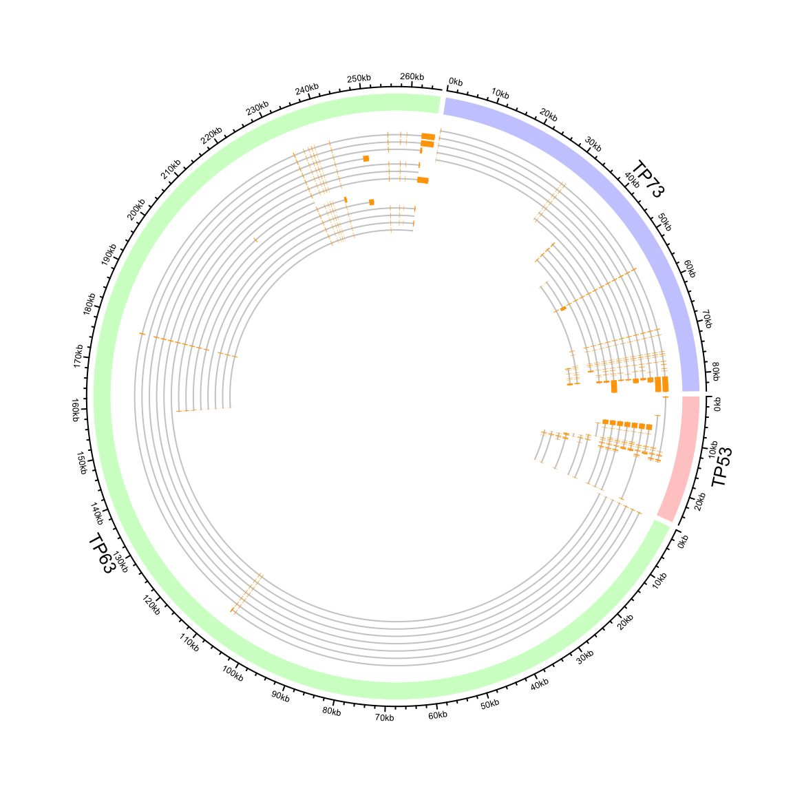
Circular representation of alternative transcripts for genes.
Zooming chromosomes
extend_chromosomes = function(bed, chromosome, prefix = "zoom_") {
zoom_bed = bed[bed[[1]] %in% chromosome, , drop = FALSE]
zoom_bed[[1]] = paste0(prefix, zoom_bed[[1]])
rbind(bed, zoom_bed)
}
cytoband = read.cytoband()
cytoband_df = cytoband$df
chromosome = cytoband$chromosome
xrange = c(cytoband$chr.len, cytoband$chr.len[c("chr1", "chr2")])
normal_chr_index = 1:24
zoomed_chr_index = 25:26
# normalize in normal chromsomes and zoomed chromosomes separately
sector.width = c(xrange[normal_chr_index] / sum(xrange[normal_chr_index]),
xrange[zoomed_chr_index] / sum(xrange[zoomed_chr_index]))
par1 = ccPar(start.degree = 90)
cc = ccPlot(initMode = 'initializeWithIdeogram', cytoband = extend_chromosomes(cytoband_df, c("chr1", "chr2")),
sector.width = sector.width)
bed = generateRandomBed(500)
t1 = ccGenomicTrack(extend_chromosomes(bed, c("chr1", "chr2")),
panel.fun = function(region, value, ...) {
circos.genomicPoints(region, value, pch = 16, cex = 0.3)
})
cc + par1 + t1
circos.link("chr1", get.cell.meta.data("cell.xlim", sector.index = "chr1"),
"zoom_chr1", get.cell.meta.data("cell.xlim", sector.index = "zoom_chr1"),
col = "#00000020", border = NA)
circos.clear()
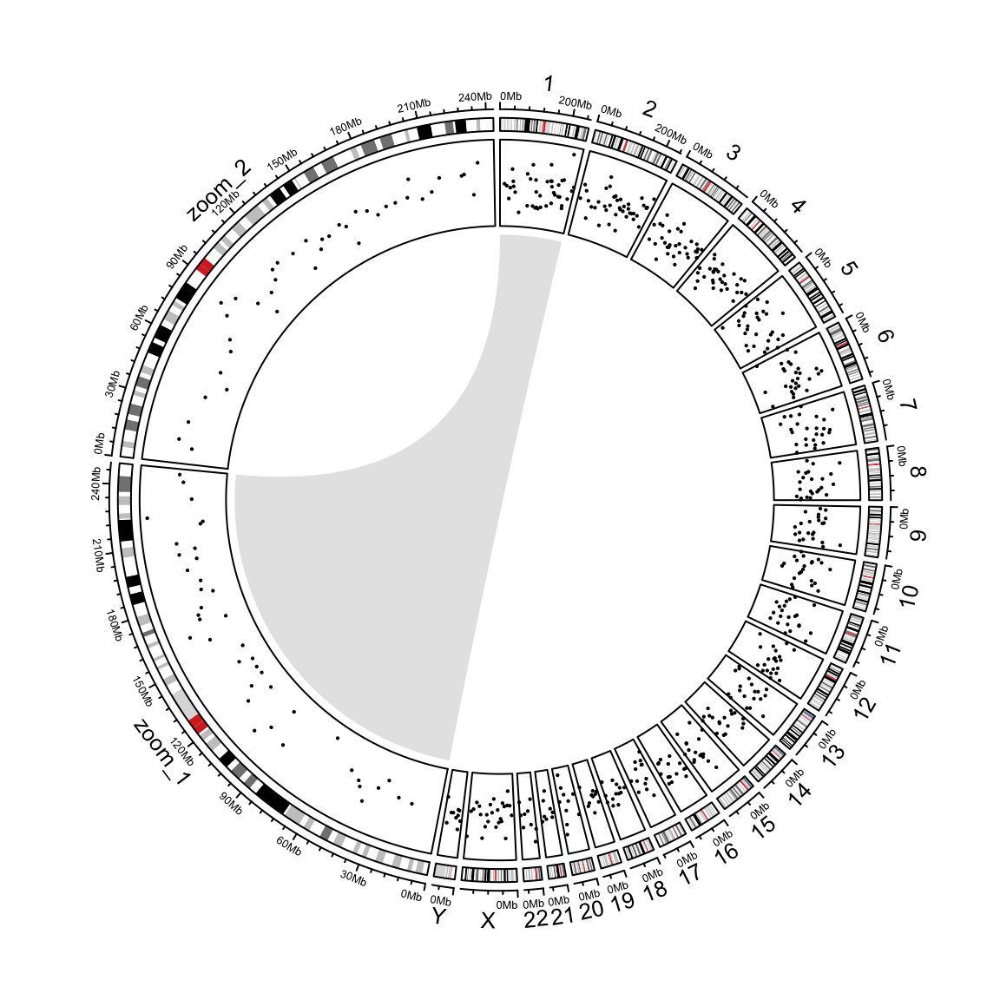
Zoom chromosomes.
Concatenating two genomes
human_cytoband = read.cytoband(species = "hg19")$df
mouse_cytoband = read.cytoband(species = "mm10")$df
human_cytoband[ ,1] = paste0("human_", human_cytoband[, 1])
mouse_cytoband[ ,1] = paste0("mouse_", mouse_cytoband[, 1])
cytoband = rbind(human_cytoband, mouse_cytoband)
head(cytoband)
chromosome.index = c(paste0("human_chr", c(1:22, "X", "Y")),
rev(paste0("mouse_chr", c(1:19, "X", "Y"))))
ccPlot(initMode = "initializeWithIdeogram", cytoband = cytoband, chromosome.index = chromosome.index)
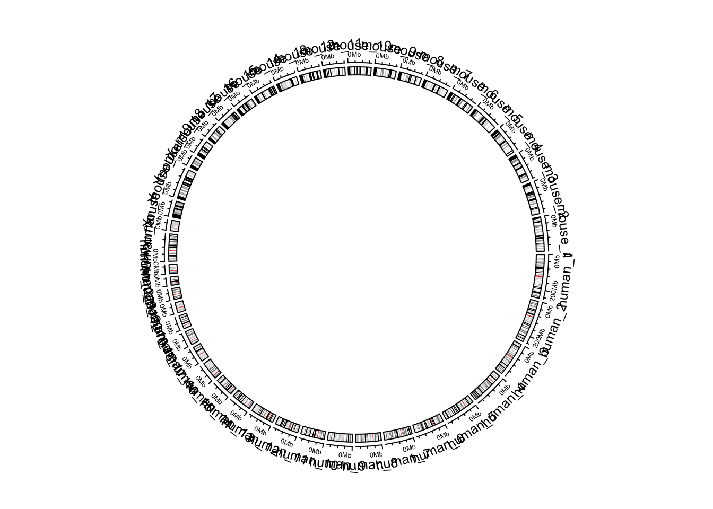
Default style of two combined genomes.
circos.clear()
par1 = ccPar(gap.after = c(rep(1, 23), 5, rep(1, 20), 5))
cc = ccPlot(initMode = "initializeWithIdeogram", cytoband = cytoband, plotType = NULL,
chromosome.index = chromosome.index)
t1 = ccTrack(ylim = c(0, 1), panel.fun = function(x, y) {
circos.text(CELL_META$xcenter, CELL_META$ylim[2] + mm_y(2),
gsub(".*chr", "", CELL_META$sector.index), cex = 0.6, niceFacing = TRUE)
}, track.height = mm_h(1), cell.padding = c(0, 0, 0, 0), bg.border = NA)
t2 = ccGenomicIdeogram(cytoband)
cc + par1 + t1 + t2
highlight.chromosome(paste0("human_chr", c(1:22, "X", "Y")),
col = "red", track.index = 1)
highlight.chromosome(paste0("mouse_chr", c(1:19, "X", "Y")),
col = "blue", track.index = 1)
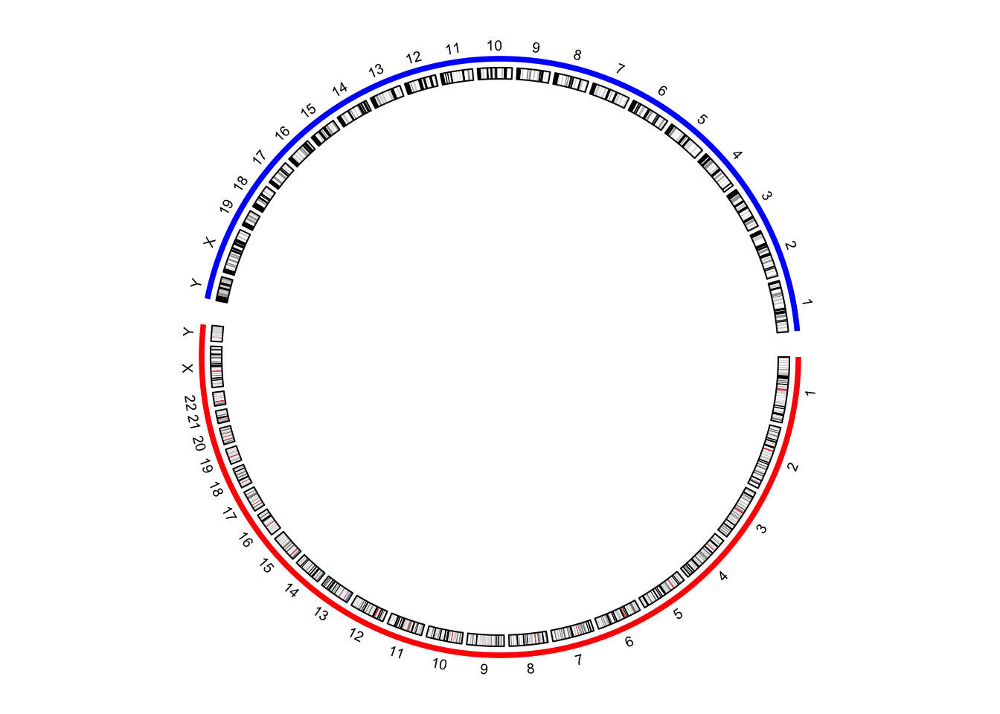
(\#fig:genomic-combined-improved)Improved visualization of the combined genome.
circos.clear()
human_chromInfo = read.chromInfo(species = "hg19")$df
mouse_chromInfo = read.chromInfo(species = "mm10")$df
human_chromInfo[ ,1] = paste0("human_", human_chromInfo[, 1])
mouse_chromInfo[ ,1] = paste0("mouse_", mouse_chromInfo[, 1])
chromInfo = rbind(human_chromInfo, mouse_chromInfo)
# note the levels of the factor controls the chromosome orders in the plot
chromInfo[, 1] = factor(chromInfo[ ,1], levels = chromosome.index)
head(chromInfo)
par1 = ccPar(gap.after = c(rep(1, 23), 5, rep(1, 20), 5))
cc = ccPlot(initMode = "genomicInitialize", data = chromInfo, plotType = NULL)
t1 = ccTrack(ylim = c(0, 1), panel.fun = function(x, y) {
circos.text(CELL_META$xcenter, CELL_META$ylim[2] + mm_y(2),
gsub(".*chr", "", CELL_META$sector.index), cex = 0.6, niceFacing = TRUE)
}, track.height = mm_h(1), cell.padding = c(0, 0, 0, 0), bg.border = NA)
t2 = ccTrack(ylim = c(0, 1))
cc + par1 + t1 + t2
highlight.chromosome(paste0("human_chr", c(1:22, "X", "Y")),
col = "red", track.index = 1)
highlight.chromosome(paste0("mouse_chr", c(1:19, "X", "Y")),
col = "blue", track.index = 1)
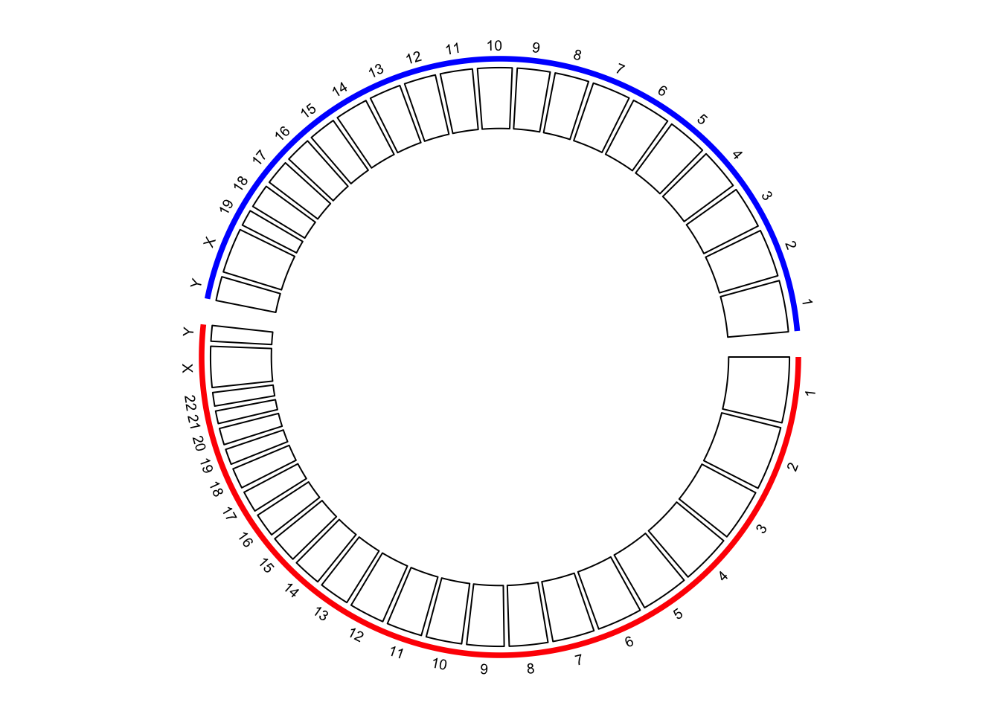
Initialize the plot with chromosome ranges.
circos.clear()
par1 = ccPar(gap.after = c(rep(1, 23), 5, rep(1, 20), 5))
cc = ccPlot(initMode = "genomicInitialize", data = chromInfo, plotType = NULL)
t1 = ccTrack(ylim = c(0, 1), panel.fun = function(x, y) {
circos.text(CELL_META$xcenter, CELL_META$ylim[2] + mm_y(2),
gsub(".*chr", "", CELL_META$sector.index), cex = 0.6, niceFacing = TRUE)
}, track.height = mm_h(1), cell.padding = c(0, 0, 0, 0), bg.border = NA)
t2 = ccGenomicIdeogram(cytoband = cytoband)
highlight.chromosome(paste0("human_chr", c(1:22, "X", "Y")),
col = "red", track.index = 1)
highlight.chromosome(paste0("mouse_chr", c(1:19, "X", "Y")),
col = "blue", track.index = 1)
# a track of points
human_df = generateRandomBed(200, species = "hg19")
mouse_df = generateRandomBed(200, species = "mm10")
human_df[ ,1] = paste0("human_", human_df[, 1])
mouse_df[ ,1] = paste0("mouse_", mouse_df[, 1])
df = rbind(human_df, mouse_df)
t3 = ccGenomicTrack(df, panel.fun = function(region, value, ...) {
circos.genomicPoints(region, value, col = rand_color(1), cex = 0.5, ...)
})
# links between human and mouse genomes
human_mid = data.frame(
chr = paste0("human_chr", 1:19),
mid = round((human_chromInfo[1:19, 2] + human_chromInfo[1:19, 3])/2)
)
mouse_mid = data.frame(
chr = paste0("mouse_chr", 1:19),
mid = round((mouse_chromInfo[1:19, 2] + mouse_chromInfo[1:19, 3])/2)
)
l1 = ccGenomicLink(human_mid, mouse_mid, col = rand_color(19))
cc + par1 + t1 + t2 + t3 + l1
circos.clear()
text(-0.9, -0.8, "Human\ngenome")
text(0.9, 0.8, "Mouse\ngenome")
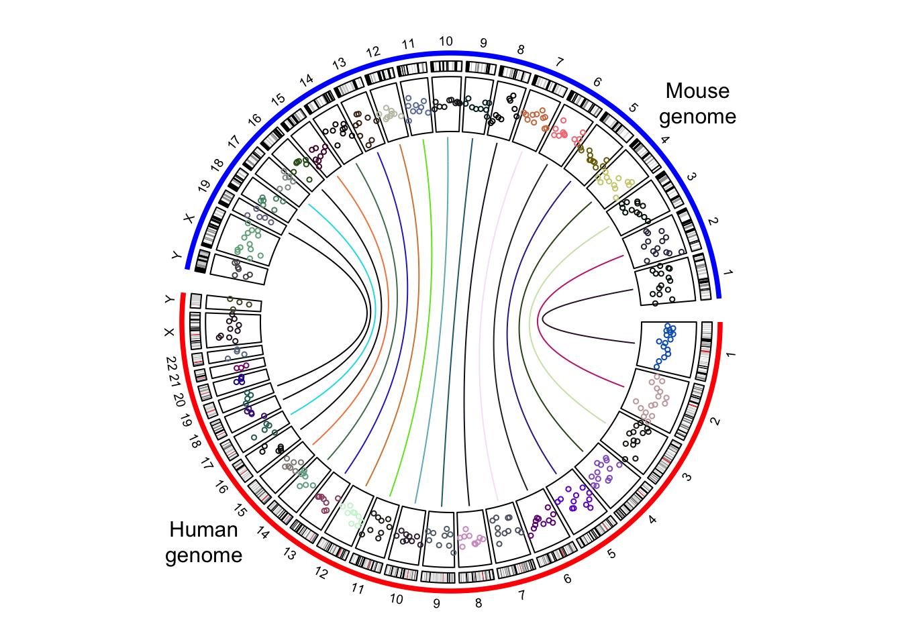
The combined genome with more tracks.